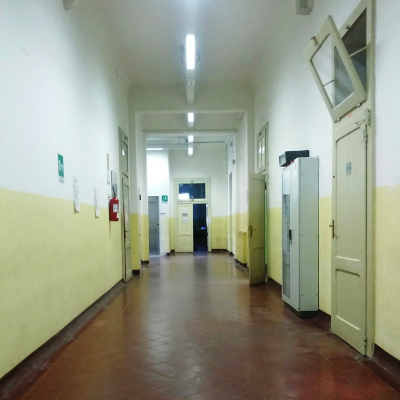
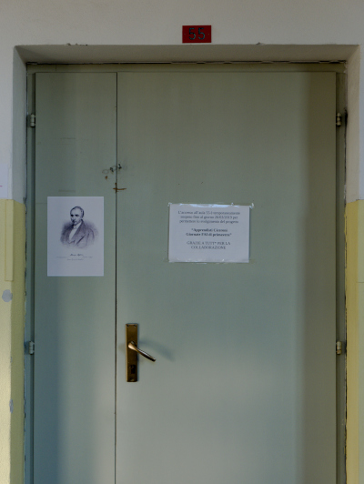
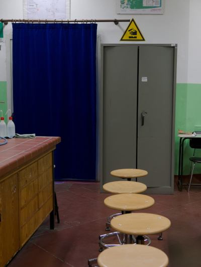
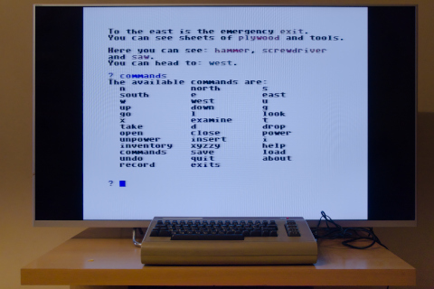
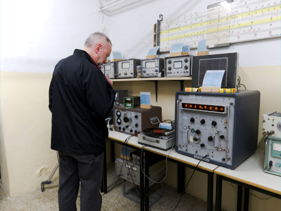

copyright © 1985,2026 Roberto Ceccarelli - «The Strawberry Field»
A.D. MCMLXXXIV, somewhere in Italy.
It's May and the end of the school year is approaching. If you don't do well in your last Latin test, Prof. De Boccis will fail you.
De Boccis comes from another city and, knowing that he may be delayed by public transport, he leaves the test at school so that a colleague can start the test immediately.
The plan is to get hold of the text and then translate it with the help of your classmate Secchioni: he will get a perfect A, while you will insert a few errors so as not to arouse too much suspicion.
Let's go back to school for the ultimate student adventure: playing pranks on our teachers!

In February 1985, MCmicrocomputer magazine published the source code for a text adventure parser in its Apple 2 column.
At the time, the reference was Enrico Colombini's book "Scrivere un gioco di avventura sul personal computer" (Writing an adventure game on a personal computer), but Guglielmo Nigri's program published in MC had a different approach.
While in Colombini's system the game was hard-coded in the source code, Nigri's was a universal parser fed by text files containing the various adventures.
I adapted the MC program for my Commodore 64 and even wrote a couple of adventures, but no one ever got to play them.
Last summer, while searching through my old floppy disks for the legendary "SOSYA", I rediscovered the two adventures I had forgotten.
Playing "Latinorum" took me back to my high school days, the setting for the story, which was inspired by real events (later reworked in the game).
Biblical loading times, despite the use of floppy disks, hardcoded commands, descriptions limited to 250 characters, and many other problems discouraged its use. But I was eager to give that little story a new lease on life, so I decided to rewrite the system from scratch, leaving it on the "plain vanilla" Commodore 64.

The original program had an editor that requested various data in order and stored it in a .SEQ file.
No modification of the entered data was allowed.
Completely abandoned, it has been replaced by a C# procedure that takes a JSON file and translates it into a series of .PRG modules that contain no code, only data: reading a .PRG file is much faster than a .SEQ file on the Commodore 64.
The IFBuilder project also contains a program that extracts data from the original .SEQ files that I used to obtain the basis for this new edition.
The modules thus created contain all the texts and commands, making it possible to use the same parsing program with any language.
The new parser is written in BASIC 2.0, the one resident in the ROMs, supplemented by some procedures written in assembler for speed reasons and because it also uses the RAM located below the system ROMs.
C64List, a tokenizer that allows the use of long variable names, labels instead of line numbers, and includes, was used to write the BASIC code.
The end result is very compact code, as all comments and unnecessary spaces are removed, and the lines are numbered starting from 0 with consecutive numbers: almost impossible to read.

The whole thing is completed by a loader that loads all the modules together with the "opening titles", aided by the "star turbo" which speeds up reading from the drive.
When testing the program on a real machine with an SD2IEC card reader, it became apparent that the card reader is incompatible with the "star turbo" program; therefore, an alternative version of the loader, named "latinorum.sd," was created that does not use that utility.
In that case, loading times triple.
The game uses a simple two-word parser: verb and object (the latter being optional in some cases).
The available verbs are listed below; you can view the list during the game by typing commands.
Usable items are highlighted in red in the descriptions; synonyms, articles, pronouns, or any other unhighlighted words are not allowed.
The parser recognizes 26 types of actions that can also be associated
with multiple commands, such as abbreviations.
The associations used in the English version of “Latinorum” will be used
below.


A.D. MCMLXXXIV
Maggio, l'anno scolastico sta per terminare e il prof. De Boccis ti rimanderà in Latino se non farai bene l'ultimo compito in classe.
De Boccis viene da un'altra città e sapendo di poter avere dei ritardi dovuti ai trasporti pubblici lascia il testo del compito a scuola in modo che un collega possa far iniziare subito la prova.
Il piano prevede di procurarsi il testo e poi tradurlo con l'aiuto del compagno Secchioni: lui prenderà un bel 10, mentre tu inserirai qualche errorino per non destare troppi sospetti.
Torniamo a scuola per vivere la massima avventura per uno studente: fare fessi i propri insegnanti!
Nel febbraio 1985 la rivista MCmicrocomputer pubblica, nella rubrica dedicata all'Apple 2, il sorgente di un parser per avventure testuali.
All'epoca il riferimento era il libro di Enrico Colombini "Scrivere un gioco di avventura sul personal computer", ma il programma di Guglielmo Nigri pubblicato su MC aveva un approccio diverso.
Mentre nel sistema di Colombini il gioco era hard-coded nel sorgente, quello di Nigri era un prser universale alimentato da files testo contenti le varie avventure.
Adattai il programma di MC per il mio Commodore 64 e ci scrissi anche un paio di avventure, che però nessuno ebbe modo di giocare.
La scorsa estate, recuperando i miei vecchi floppy alla ricerca del mitico "SOSYA", sono tornate fuori le due avventure che avevo dimenticato.
Giocare a "Latinorum" mi ha riportato ai tempi del liceo, quello in cui è ambientata la storia, ispirata a fatti realmente accaduti (poi rielaborati nel gioco).
Tempi di caricamento biblici, nonostante l'uso dei floppy disk, comandi hardcoded, descrizioni limitate a 250 caratteri e tanti altri problemi ne scoraggiavano l'uso.
Ma la voglia di dare una nuova vita a quella storiella era tanta e così ho deciso di riscrivere da capo il sistema, lasciandolo comunque sul Commodore 64 "plain vanilla".
Il programma originale era dotato di un editor che richiedeva in ordine i vari dati e li memorizzava in un file .SEQ
Non era permessa alcuna modifica dei dati inseriti.
Completamente abbandonato è stato sostituito da una procedura C# che prende in carico un file JSON e lo traduce in una serie di moduli .PRG che non contengono codice, ma solo dati: la lettura di un file .PRG è estremamente più veloce di un .SEQ sul Commodore 64.
Il progetto IFBuilder contiene anche un programma che estrae i dati dai .SEQ originali che ho usato per ottenere la base di questa nuova edizione.
I moduli così creati contengono tutti i testi ed i comandi, rendendo possibile utilizzare lo stesso programma di parsing con qualsiasi lingua.
Il nuovo parser è scritto in BASIC 2.0, quello residente nelle ROM, integrato da alcune procedure scritte in assembler per questioni di velocità e per il fatto che viene sfruttata anche la RAM posta al di sotto delle ROM di sistema.
Per la scrittura del codice BASIC è stato utilizzato C64List, un tokenizer che consente di utilizzare nomi di variabili lunghe, etichette al posto dei numeri di linea ed include.
Il risultato finale è un codice molto compatto in quanto vengono soppressi tutti i commenti, gli spazi non indispensabili e le righe vengono numerate a partire da 0 con i numeri tutti consecutivi: pressochè impossibile da leggere.
Completa il tutto un loader che si occupa di caricare tutti i moduli assieme ai "titoli di testa", aiutato dallo "star turbo" che velocizza la lettura dal drive.
Testando il programma su una macchina reale con un lettore SD2IEC è emerso che quest'ultimo è incompatibile con il programma "star turbo" per cui è stata realizzata una versione alternativa del loader, denominata "latinorum.sd", che non sfrutta tale utility.
I tempi di caricamento in tal caso triplicano.
Il gioco utilizza un semplice parser a due parole: verbo e oggetto (quest'ultimo opzionale in alcuni casi).
I verbi conosciuti sono elencati più sotto, la lista è consultabile durante il gioco scrivendo comandi.
Gli oggetti utilizzabili sono indicati in rosso nelle descrizioni, non sono ammessi sinonimi, articoli, pronomi o qualsiasi altra parola non evidenziata.
Il parser riconosce 26 tipi di azioni che possono essere associate
anche a più comandi, ad esempio abbreviazioni.
Nel seguito verranno utilizzate le associazioni utilizzate nella
versione italiana di “Latinorum”.
This is a work of fiction.
Unless otherwise indicated, all the names, characters, businesses, places, events and incidents in this book are either the product of the author’s imagination or used in a fictitious manner.
Any resemblance to actual persons, living or dead, or actual events is purely coincidental.
Casasoft IFPlayer 2026 is free software: you can redistribute it and/or modify it under the terms of the GNU Affero General Public License as published by the Free Software Foundation, either version 3 of the License, or (at your option) any later version.
Casasoft IFPlayer 2026 is distributed in the hope that it will be useful, but WITHOUT ANY WARRANTY; without even the implied warranty of MERCHANTABILITY or FITNESS FOR A PARTICULAR PURPOSE. See the GNU Affero General Public License for more details.
You should have received a copy of the GNU Affero General Public License
along with Casasoft IFPlayer 2026.
If not, see http://www.gnu.org/licenses/.